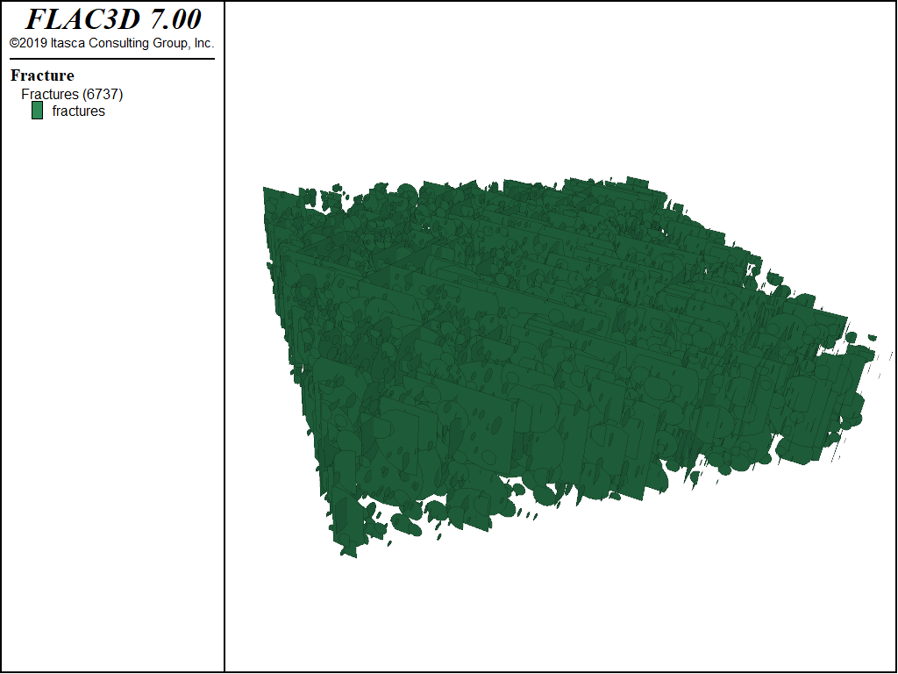
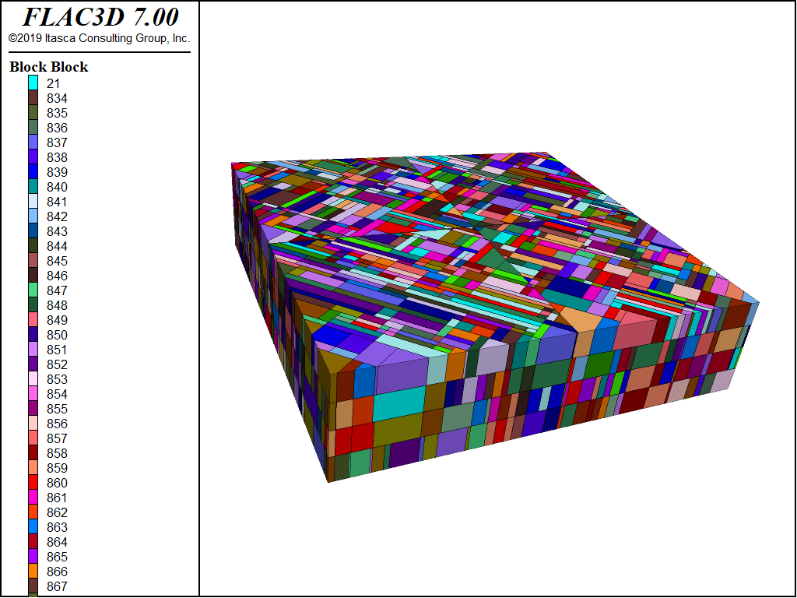

带 DFN 的水力压裂
警告
注意
要在 3DEC 中查看此项目，请使用菜单命令 。选择“3DEC/ ExampleApplications/ Hydraulic_Fracture_DFN”，然后选择“hf.prj”进行加载。所用的主数据文件（main data files）显示在本示例的末尾。所有数据文件都可在该项目中找到。
该问题的运行时间很长。如需运行此验证问题，请预留 12-24 小时（取决于计算机速度）以完成计算。
引言
本教程将向用户介绍创建基本水力压裂模型所需的命令顺序。该模型需要离散裂隙网络（DFN），其以补充文件“dfn.dat”提供。还提供了另一个文件（“hf.fis”），其中包含若干支持水力压裂模拟的函数。该文件附在本教程末尾。
模型创建
几何
首先清除模型信息，并使用 配置流体计算模式（model configure fluid） 激活流体流动计算模式。该命令必须在创建任何块体之前执行。这将增加内存以支持裂隙流体流动的计算。另请注意，3DEC 中的节理流体流动要求小应变分析，因此还需要命令 model large-strain off。
接下来，定义并调用一个 FISH 函数，以设置定义模型几何的参数。指定整个模型的形心位于 (0, 0, 0)（xmiddle、ymiddle、zmiddle），并用其作为构成岩体的边界点的参考点。还指定了模型的尺寸（_modelSize_x = 800、_modelSize_y = 800、_modelSize_z = 200）。为水力裂隙指定了节理 ID（hf_id=10000）。DFN 区域所需的较小内部盒体由六个点（x1、x2、x3、y1、y2、y3、z1、z2、z3）指定，而扩展模型则由带“_ext”后缀的类似变量指定。这样做的目的是使模型边界远离关注区域。函数中还包含定义关注区域和扩展模型界限的计算。为额外关注平面的位置指定了附加 z 坐标（z_sub1、z_sub2）。最后，为内部和外部区域的离散化定义了网格单元尺寸（edge_size）（内部 = 10，外部 = 3×内部）。
fish define set_geometry
; 输入参数
; 模型中部
global xmiddle = 0.0
global ymiddle = 0.0
global zmiddle = 0.0
; 关注区域（DFN 区域）的尺寸
local _modelSize_x =800
local _modelSize_y =800
local _modelSize_z =200
; 水力裂隙节理 id
global hf_id=10000
; 关注区域内的网格单元尺寸
global edge_size=10
; 几何计算，请勿更改
; 关注区域（DFN 区域）的边界
global x1 = xmiddle - 0.5*_modelSize_x
global x2 = xmiddle + 0.5*_modelSize_x
global y1 = ymiddle - 0.5*_modelSize_y
global y2 = ymiddle + 0.5*_modelSize_y
global z1 = zmiddle - 0.5*_modelSize_z
global z2 = zmiddle + 0.5*_modelSize_z
; 扩展模型的边界
global x1_ext = xmiddle - _modelSize_x
global x2_ext = xmiddle + _modelSize_x
global y1_ext = ymiddle - _modelSize_y
global y2_ext = ymiddle + _modelSize_y
global z1_ext = zmiddle - _modelSize_z
global z2_ext = zmiddle + _modelSize_z
; 附加平面的 z 坐标
global z_sub1 = zmiddle - 0.25*_modelSize_z
global z_sub2 = zmiddle + 0.25*_modelSize_z
global edge_size_outer = 3*edge_size ; 外部计算域的离散
end
块体模型
我们为模型初始化一个总体容差（02），它除其他设置外，还设定网格点之间的最小距离和子接触的面积。
随后使用以下命令创建块体模型。该命令使用前一函数（set_geometry）中定义的点。利用扩展模型的界限，指定外部块体的顶点。
block create brick [x1_ext] [x2_ext] [y1_ext] [y2_ext] [z1_ext] [z2_ext]
内部 DFN 区域使用六个（6）节理创建，每个节理定义内部盒体的一个面。使用几何函数中定义的顶点，指定每个节理面的原点。每次切割均使用以下命令完成：
block cut joint-set dip 0 dip-direction 0 ori [x1] [y1] [z1]
block cut joint-set dip 0 dip-direction 0 ori [x1] [y1] [z2]
block cut joint-set dip 90 dip-direction 0 ori [x1] [y1] [z1]
block cut joint-set dip 90 dip-direction 0 ori [x1] [y2] [z1]
block cut joint-set dip 90 dip-direction 90 ori [x1] [y1] [z1]
block cut joint-set dip 90 dip-direction 90 ori [x2] [y1] [z1]
model range create 'middle' position-x [x1] [x2] position-y [y1] [y2] position-z [z1] [z2]
block hide range named-range 'middle'
内部 DFN 区域使用 range 命令命名为“middle”，然后使用 block hide 命令并指定该命名范围将其隐藏。这样做的目的是使添加到外部块体的节理不会被加到内部块体上。
随后使用 block densify 命令为外部扩展模型创建虚拟块体。该命令可方便地在整个模型中生成一系列节理。紧随其后采用加密属性的 block join 命令会将新块体连接起来。由于内部区域被隐藏，只有外部块体被切割。
使用 block hide off 使内部区域可见，该区域不会被加密命令切割。虚拟节理的目的只是加快后续的网格划分（随着块体体积增大，网格划分会显著变慢）。
内部 DFN 区域需要水力裂隙面，而外部扩展模型不需要。这通过以下命令实现：
block hide range named-range 'middle' not
block cut joint-set dip 90 dip-direction 0 ori [xmiddle] [ymiddle] [zmiddle] jointset-id [hf_id]
对 block hide 命令的范围应用 not 关键字，将隐藏除指定范围（middle）之外的所有内容。在几何函数中各点指定的原点处引入一条节理。该节理还赋予一个 I.D.，该 I.D. 同样在几何函数中指定（hf_id=10000）。
随后引入附加的虚拟节理面，以帮助将 DFN 切割限制在内部区域。
DFN
现在 DFN 已可引入模型。有关如何创建 DFN 模板并应用必要过滤器的进一步说明，见切割块体（Cutting Blocks）中的 DFN 一节。就我们的目的而言，使用的是预先过滤的 DFN，该文件包含将 DFN 导入模型所需的全部数据。应用于该 DFN 的过滤器包括去除某些方位的裂隙、极小的裂隙，并重新调整裂隙方位，以便在切割过程中不会形成极小的薄块体。
model domain extent [x1_ext] [x2_ext] [y1_ext] [y2_ext] [z1_ext] [z2_ext]
fracture import skip-errors from-file 'dfn.dat' dfn 'fractures'
skip-errors 关键字会将非平面的裂隙转换为最佳拟合平面。若不使用 skip-errors 关键字，非平面裂隙将产生错误信息并停止执行。创建一个名为“DFN”的新图。添加“Fracture - Fracture”（图 1（Figure 1））。


图 1：离散裂隙网络。
现在，可用 DFN（“fractures”）通过 按 DFN 切割区块命令（block cut dfn） 命令在 3DEC 模型中切割节理。生成的块体如图 2（Figure 2）所示。


图 2：用 DFN 切割后得到的块体。
注意，DFN 的域设置为外部模型范围；但由于外部区域保持隐藏，DFN 实际应用于内部区域。建议将 DFN 域设置得比关注区域更大，以消除任何边界问题。
初始块体模型现已完成，所有块体都可以显示出来。在划分网格之前保存块体模型也是一种好做法。
网格划分
创建块体模型的最后阶段是通过网格划分使块体可变形。外部块体较粗，而 DFN 区域划分得较细。各范围所用的棱边长度在几何函数中分别指定为 edge_size 和 edge_size_outer。
block zone generate edgelength [edge_size] range named-range 'middle'
block zone generate edgelength [edge_size_outer] range named-range 'middle' not
可使用以下命令将模型信息记录保存到日志文件中：
program log-file 'model_info.log'
program log on
model list info
program log off
通过使用 model list info 命令，可将有关全局变量、参数设置和程序状态的信息输出到屏幕。由于日志文件已启动并设置为“on”，输出到屏幕的任何信息也会被捕获并保存到日志文件中。
最后，使用 保存模型（model save） 命令保存模型状态。同时保存项目（File - Save Project）也是个好做法。
属性
定义一个 FISH 函数来设置所有属性并将其赋予变量，类似于第 1 步中定义的几何函数。用于定义各属性变量的 FISH 代码如下：
fish define set_mat_prop
; 输入参数
; 完整岩石参数
global rock_young = 20e9 ; Pa
global rock_poisson = 0.25
global rock_density = 2600.0
; 节理参数
global joint_kn = 5.e10
global joint_ks = 5.e10
global joint_cohesion = 0.0
global joint_friction = 20.0
global joint_tension = 0.0
global j_ap0 = 1.0e-4 ;法向应力为 0 时的缝宽
; 流体参数
global fluid_bulk_ = 3e6
global fluid_density_ = 1000.0
global fluid_viscosity_ = 0.0015
end
FISH 函数并不赋予材料属性，只是指定变量来存储将要使用的数值。也可以不使用 FISH 而直接输入材料属性，但 FISH 函数提供了一种整洁的方式，可将所有参数集中在一起，并便于日后修改这些参数。
网格单元设为弹性，并按如下方式赋予属性：
block zone cmodel assign elastic
block zone property density [rock_density] young [rock_young] poisson [rock_poisson]
对 DFN 节理、施工节理和水力裂隙面赋予不同的节理属性。所有节理均采用莫尔-库仑本构模型。
; DFN 节理
block contact property friction [joint_friction] cohesion [joint_cohesion] ...
tension [joint_tension] range dfn-3dec 'fractures'
;水力裂隙平面
block contact property friction [joint_friction] cohesion [joint_cohesion] ...
tension [joint_tension] range joint-set [hf_id]
随后为流动面指定初始、最大和最小张开度，并赋予流体属性。
tension [joint_tension] range joint-set [hf_id]
; 渗流平面参数
flowplane vertex property aperture-ini [j_ap0] aperture-min [j_ap0] aperture-max [j_ap0]
;
; 指定流体参数
block fluid property bulk [fluid_bulk_]
原位应力
地应力相关变量的赋值方式与模型和岩石属性类似。它们定义在 FISH 函数中，并在随后的命令中使用。本示例所需的参数包括模型深度、重力加速度以及水平应力与竖向应力的最大和最小比值。计算的参数包括 z = 0 处的应力，x、y 和 z 方向的应力梯度，以及地应力流体压力。
输入与计算在函数“set_insitu”中定义，如下所示。随后执行 block insitu 命令以设置初始应力和孔隙压力。
;
;
; 定义原位应力值
fish define set_insitu
; 输入
global depth = 3000.0 ; 模型中心深度（m）
global gravity_ = 9.81 ; 公制
global kH_max=1.0 ; 最大水平应力与竖向应力之比（x）
global kh_min=0.5 ; 最小水平应力与竖向应力之比（y）
; 计算，请勿更改
; z = 0 处的应力，压应力为负
global szz0 = -rock_density*depth*gravity_
global sxx0 = kH_max*szz0
global syy0 = kh_min*szz0
; z = 0 处的流体压力，为正值
global pp0 = fluid_density_*depth*gravity_
; 梯度，沿 z 正方向每米的变化量
global szz_grad = rock_density*gravity_
global syy_grad = kh_min*szz_grad
global sxx_grad = kH_max*szz_grad
global pp_grad = -fluid_density_*gravity_
end
[set_insitu]
;
; 原位应力
block insitu stress [sxx0] [syy0] [szz0] 0. 0. 0. ...
grad-z [sxx_grad] [syy_grad] [szz_grad] 0. 0. 0. nodisp
使用 nodisp 关键字可阻止 3DEC 计算由初始应力引起的节理初始法向位移。使用 \(...\) 时，会将下一行代码视为与上一行位于同一行
边界条件
通过将 x、y 和 z 方向的速度设为零，将模型外部边界固定不动。使用以下命令设置边界速度：
;
; 边界条件
block gridpoint apply velocity 0 0 0 range position-x [x1_ext]
block gridpoint apply velocity 0 0 0 range position-x [x2_ext]
block gridpoint apply velocity 0 0 0 range position-y [y1_ext]
block gridpoint apply velocity 0 0 0 range position-y [y2_ext]
最大和最小 x、y、z 坐标被用作施加边界条件的范围。
求解初始应力状态
模型现已准备好进入初始应力状态。在开始计算阶段之前，需要确定一些总体模型设置。使用 设置重力命令（model gravity） 命令设置重力，然后打开力学计算并关闭流体计算。
我们还将流体体积模量设为零，以便孔隙压力不会因力学变形而变化。记录不平衡力的历史：
最后，将模型求解至平衡并保存。
block gridpoint apply velocity 0 0 0 range position-z [z2_ext]
;
model gravity 0 0 [-gravity_]
;
model fluid active off
model mechanical active on
block fluid property bulk 0
;
model history mechanical unbalanced-maximum
;
model solve
水力压裂模拟
在恢复初始应力状态之后，我们首先在 FISH 函数中设置模拟参数。先指定水力裂隙面初始破裂部分的半径。在注入前使该平面上一小块区域“破裂”，以启动岩石中的裂隙扩展。然后指定最大允许张开度，以控制和保持合理的时步。最后给出注入位置和注入速率。各历史记录的位置也如下所示的 hf_setup 函数中指定：
model restore 'initial'
;
; 定义各项水力压裂参数
fish define hf_setup
; 输入参数
; 水力裂隙初始破裂（张开）部分的半径
global hf_fractured_radius = 15.0
; 最大允许缝宽
global j_ap_max = 30.0e-4
; 注入点位置
global injection_loc = vector(0.0,0.0,0.0)
; 体积注入速率
global injection_rate = 0.05
; 计算得到的量
; 历史监测位置
global his_x = comp.x(injection_loc)
global his_y = comp.y(injection_loc)
global his_z = comp.z(injection_loc)
global his_x1 = comp.x(injection_loc) - 30.0
global his_x2 = comp.x(injection_loc) + 30.0
global his_z1 = comp.z(injection_loc) - 30.0
global his_z2 = comp.z(injection_loc) + 30.0
end
接下来，我们调用一个 FISH 文件，其中包含若干对岩体进行预处理所需的 FISH 函数（见hf.fis）。
我们通过使用 初始化网格点位移命令（block gridpoint initialize displacement） 命令和 block contact reset 命令重置有关已记录的块体和节理位移的信息来开始模拟。“hf.fis”文件中名为 reset_aperture 的 FISH 函数将对任何已记录的张开度进行同样的重置。
此前，最大节理张开度是用 j_ap0 值设置的；必须更改该值，以便节理张开并发生流体流动。使用 flowplane vertex property 命令，按定义的最大允许张开度（j_ap_max）更改节理属性。
使用以下命令指定记录注入位置及周围位置的时间和孔隙压力的历史记录：
flowknot history pore-pressure position [his_x] [his_y] [his_z]
flowknot history pore-pressure position [his_x1] [his_y] [his_z]
flowknot history pore-pressure position [his_x2] [his_y] [his_z]
flowknot history pore-pressure position [his_x] [his_y] [his_z1]
flowknot history pore-pressure position [his_x] [his_y] [his_z2]
回顾一下，先前曾将初始模型的流体体积模量设为零。现在我们用 fluid_bulk 变量将该体积模量重置为先前定义的数值（3 MPa）。该体积模量小于真实流体；但就本教程而言，它有助于在获得合理结果的同时加快模型求解。还使用最小流动节点体积（volmin）以避免极小的时步。类似地，还指定了最小流动面网格单元面积（areamin）。我们还打开力学与流体计算以获得耦合解。
block fluid property bulk [fluid_bulk_]
flowplane zone area-min 0.25
flowknot volume-min 1e-3
model fluid active on
model mechanical active on
一般而言，流体时步大于力学时步，因此每个流体步可能需要执行许多力学时步。严谨的解法会在每个流体步后求解力学平衡。但这将耗费很长时间，因此每个流体步的力学步数可能受到限制。以下命令将每个流体步的最大力学步数设为 5。
model mechanical substep 5
model mechanical slave on
现在需要人为使水力裂隙的一小段失效，以便流动能够开始。通过调用“hf.fis”文件中的 FISH 函数，使水力裂隙面上距注入点 hf_fractured_radius 距离内的子接触失效。同时打开 crack-flow 选项，以将流动限制在裂隙已失效的部分。
; 使水力裂隙平面的一部分破坏，以允许流动
[crack_hf]
;
; 流动仅发生在已发生拉伸破坏的节理中
block fluid crack-flow on
最后，将流体注入距指定位置最近的流动节点（injection_loc) with the fish function :kwd:`inject。
求解与分析
模拟的计算步骤由一个 FISH 函数控制，该函数循环一定次数（本例为 10 次），并在每次循环迭代中执行一条命令。在以下函数中，循环索引 k 用于创建文件名 fname，即在执行 10000 步后将循环索引与保存文件名关联起来。
要在 FISH 函数中执行 模型流体求解循环命令（model solve fluid cycles） 和 保存模型（model save） 等 3DEC 命令，需使用 FISH 内置函数 command。在包含 3DEC 命令之后，使用 end_command 指定 3DEC 命令的结束。
执行该函数后，将创建十（10）个保存文件，每个记录 10000 个计算步。每个文件的命名规则由 fname 变量指定为 hf-k.sav，其中 k 为从 1 到 10 的循环索引。
fish define loop_solve
loop local k (1,5)
global fname="hf-"+string(k)
command
model solve fluid cycles 10000
model save [fname]
end_command
end_loop
end
[loop_solve]
计算完成后，绘制 Flow Planes，将“Type”改为“Contour”，并将“Contour”改为“Joint pore pressure”。为便于比较不同阶段的孔隙压力，最好为等值线图设置固定范围。具体做法是：在“Attributes”选项卡中展开“Contour”条目，再次展开“Contour”，取消勾选“Auto”并将等值线上限设为 45e6；取消勾选“Auto”并将等值线下限设为 28e6。
施工节理会遮挡关注区域。若只想查看中心部位，可在列表中的“Flow-planes joint pore pressure”绘图项下打开 Clip Box 并展开，以查看关注区域。最终应得到类似下图的图形：

你将看到流体如何开始渗入与水力裂隙面相交的裂隙中。也可以用同样的方法查看张开度：

数据文件
geometry.dat
;;-- 定义水力压裂模型的几何形状
;
model new
fish auto-create off
model large-strain off
model configure fluid
;
; 用于指定几何参数的函数
fish define set_geometry
; 输入参数
; 模型中部
global xmiddle = 0.0
global ymiddle = 0.0
global zmiddle = 0.0
; 关注区域（DFN 区域）的尺寸
local _modelSize_x =800
local _modelSize_y =800
local _modelSize_z =200
; 水力裂隙节理 id
global hf_id=10000
; 关注区域内的网格单元尺寸
global edge_size=10
; 几何计算，请勿更改
; 关注区域（DFN 区域）的边界
global x1 = xmiddle - 0.5*_modelSize_x
global x2 = xmiddle + 0.5*_modelSize_x
global y1 = ymiddle - 0.5*_modelSize_y
global y2 = ymiddle + 0.5*_modelSize_y
global z1 = zmiddle - 0.5*_modelSize_z
global z2 = zmiddle + 0.5*_modelSize_z
; 扩展模型的边界
global x1_ext = xmiddle - _modelSize_x
global x2_ext = xmiddle + _modelSize_x
global y1_ext = ymiddle - _modelSize_y
global y2_ext = ymiddle + _modelSize_y
global z1_ext = zmiddle - _modelSize_z
global z2_ext = zmiddle + _modelSize_z
; 附加平面的 z 坐标
global z_sub1 = zmiddle - 0.25*_modelSize_z
global z_sub2 = zmiddle + 0.25*_modelSize_z
global edge_size_outer = 3*edge_size ; 外部计算域的离散
end
[set_geometry]
;
; 设置容差
block tolerance 0.02
;
; 创建大长方体
block create brick [x1_ext] [x2_ext] [y1_ext] [y2_ext] [z1_ext] [z2_ext]
;
; 定义内部 DFN 区域
block cut joint-set dip 0 dip-direction 0 ori [x1] [y1] [z1]
block cut joint-set dip 0 dip-direction 0 ori [x1] [y1] [z2]
block cut joint-set dip 90 dip-direction 0 ori [x1] [y1] [z1]
block cut joint-set dip 90 dip-direction 0 ori [x1] [y2] [z1]
block cut joint-set dip 90 dip-direction 90 ori [x1] [y1] [z1]
block cut joint-set dip 90 dip-direction 90 ori [x2] [y1] [z1]
model range create 'middle' position-x [x1] [x2] position-y [y1] [y2] position-z [z1] [z2]
block hide range named-range 'middle'
;
block densify segments 4 4 2 join
block hide off
;
block hide range named-range 'middle' not
block cut joint-set dip 90 dip-direction 0 ori [xmiddle] [ymiddle] [zmiddle] jointset-id [hf_id]
;
block cut joint-set dip 90 dip-direction 90 ori [xmiddle] [ymiddle] [zmiddle]
block cut joint-set dip 0 dip-direction 0 ori [xmiddle] [ymiddle] [zmiddle]
block cut joint-set dip 0 dip-direction 0 ori [xmiddle] [ymiddle] [z_sub1]
block cut joint-set dip 0 dip-direction 0 ori [xmiddle] [ymiddle] [z_sub2]
;
;
; 导入 DFN 并进行切割
model domain extent [x1_ext] [x2_ext] [y1_ext] [y2_ext] [z1_ext] [z2_ext]
fracture import skip-errors from-file 'dfn.dat' dfn 'fractures'
;
block cut dfn id 1
;
block hide off
;
model save 'blocks'
;
; 生成网格单元
block zone generate edgelength [edge_size] range named-range 'middle'
block zone generate edgelength [edge_size_outer] range named-range 'middle' not
;
program log-file 'model_info.log'
program log on
model list info
program log off
;
model save 'zoned'
initial.dat
; 设置参数并赋予初始条件和边界条件
;
model restore 'zoned'
;
; 用于定义材料和流体参数的函数
fish define set_mat_prop
; 输入参数
; 完整岩石参数
global rock_young = 20e9 ; Pa
global rock_poisson = 0.25
global rock_density = 2600.0
; 节理参数
global joint_kn = 5.e10
global joint_ks = 5.e10
global joint_cohesion = 0.0
global joint_friction = 20.0
global joint_tension = 0.0
global j_ap0 = 1.0e-4 ;法向应力为 0 时的缝宽
; 流体参数
global fluid_bulk_ = 3e6
global fluid_density_ = 1000.0
global fluid_viscosity_ = 0.0015
end
[set_mat_prop]
;
; 指定岩石参数
block zone cmodel assign elastic
block zone property density [rock_density] young [rock_young] poisson [rock_poisson]
;
; 节理材料，初始应力状态下保持缝宽不变
;
; DFN 外部的节理
block contact jmodel assign mohr
block contact property stiffness-normal [joint_kn] stiffness-shear [joint_ks]
block contact property friction 40 cohesion 1e30 tension 1e30
; DFN 节理
block contact property friction [joint_friction] cohesion [joint_cohesion] ...
tension [joint_tension] range dfn-3dec 'fractures'
;水力裂隙平面
block contact property friction [joint_friction] cohesion [joint_cohesion] ...
tension [joint_tension] range joint-set [hf_id]
; 渗流平面参数
flowplane vertex property aperture-ini [j_ap0] aperture-min [j_ap0] aperture-max [j_ap0]
;
; 指定流体参数
block fluid property bulk [fluid_bulk_]
block fluid property density [fluid_density_]
block fluid property viscosity [fluid_viscosity_]
;
;
; 定义原位应力值
fish define set_insitu
; 输入
global depth = 3000.0 ; 模型中心深度（m）
global gravity_ = 9.81 ; 公制
global kH_max=1.0 ; 最大水平应力与竖向应力之比（x）
global kh_min=0.5 ; 最小水平应力与竖向应力之比（y）
; 计算，请勿更改
; z = 0 处的应力，压应力为负
global szz0 = -rock_density*depth*gravity_
global sxx0 = kH_max*szz0
global syy0 = kh_min*szz0
; z = 0 处的流体压力，为正值
global pp0 = fluid_density_*depth*gravity_
; 梯度，沿 z 正方向每米的变化量
global szz_grad = rock_density*gravity_
global syy_grad = kh_min*szz_grad
global sxx_grad = kH_max*szz_grad
global pp_grad = -fluid_density_*gravity_
end
[set_insitu]
;
; 原位应力
block insitu stress [sxx0] [syy0] [szz0] 0. 0. 0. ...
grad-z [sxx_grad] [syy_grad] [szz_grad] 0. 0. 0. nodisp
block insitu pore-pressure [pp0] gradient 0 0 [pp_grad]
;
; 边界条件
block gridpoint apply velocity 0 0 0 range position-x [x1_ext]
block gridpoint apply velocity 0 0 0 range position-x [x2_ext]
block gridpoint apply velocity 0 0 0 range position-y [y1_ext]
block gridpoint apply velocity 0 0 0 range position-y [y2_ext]
block gridpoint apply velocity 0 0 0 range position-z [z1_ext]
block gridpoint apply velocity 0 0 0 range position-z [z2_ext]
;
model gravity 0 0 [-gravity_]
;
model fluid active off
model mechanical active on
block fluid property bulk 0
;
model history mechanical unbalanced-maximum
;
model solve
;
model save 'initial'
;
simulate.dat
; 进行水力压裂模拟
;
model restore 'initial'
;
; 定义各项水力压裂参数
fish define hf_setup
; 输入参数
; 水力裂隙初始破裂（张开）部分的半径
global hf_fractured_radius = 15.0
; 最大允许缝宽
global j_ap_max = 30.0e-4
; 注入点位置
global injection_loc = vector(0.0,0.0,0.0)
; 体积注入速率
global injection_rate = 0.05
; 计算得到的量
; 历史监测位置
global his_x = comp.x(injection_loc)
global his_y = comp.y(injection_loc)
global his_z = comp.z(injection_loc)
global his_x1 = comp.x(injection_loc) - 30.0
global his_x2 = comp.x(injection_loc) + 30.0
global his_z1 = comp.z(injection_loc) - 30.0
global his_z2 = comp.z(injection_loc) + 30.0
end
[hf_setup]
;
; 辅助水力压裂模拟的函数
program call 'hf.fis'
;
; 重置位移、缝宽和时间
block gridpoint initialize displacement 0 0 0
block contact reset displacement
[reset_aperture]
model mechanical time-total 0
;
; 修改节理材料以允许节理张开
flowplane vertex property aperture-maximum [j_ap_max] range joint-set [hf_id]
flowplane vertex property aperture-maximum [j_ap_max] range dfn-3dec 'fractures'
;
;
; 设置历史
flowknot history pore-pressure position [his_x] [his_y] [his_z]
flowknot history pore-pressure position [his_x1] [his_y] [his_z]
flowknot history pore-pressure position [his_x2] [his_y] [his_z]
flowknot history pore-pressure position [his_x] [his_y] [his_z1]
flowknot history pore-pressure position [his_x] [his_y] [his_z2]
;
; 设置通用流体参数
block fluid property bulk [fluid_bulk_]
flowplane zone area-min 0.25
flowknot volume-min 1e-3
model fluid active on
model mechanical active on
;
; 每个流体步允许的最大力学计算步数
model mechanical substep 5
model mechanical slave on
;
; 使水力裂隙平面的一部分破坏，以允许流动
[crack_hf]
;
; 流动仅发生在已发生拉伸破坏的节理中
block fluid crack-flow on
;
; 注入
[inject]
;
fish define loop_solve
loop local k (1,5)
global fname="hf-"+string(k)
command
model solve fluid cycles 10000
model save [fname]
end_command
end_loop
end
[loop_solve]
;
hf.fis
;
; 将水力裂隙的一小部分设置为“已破坏”的函数
;
; 输入：hf_fractured_radius - 水力裂隙破裂部分的半径（flt）
; injection_loc - 注入位置（v3）
; hf_id - 水力裂隙节理的 id（int）
;
fish define crack_hf
loop foreach local cxi block.subcontact.list
; 检查是否位于钻孔注入点的给定半径范围内
local dist_ = math.mag(injection_loc - block.subcontact.pos(cxi))
if dist_ <= hf_fractured_radius then
block.subcontact.state(cxi) = 3 ; 将状态设为“拉伸破坏”
block.subcontact.extra(cxi) = 3 ; 用于绘图
else
block.subcontact.state(cxi) = 0 ; 设置为未破坏
block.subcontact.extra(cxi) = 0
endif
end_loop
end
;
; 将力学缝宽设为初始值的函数
;
; 输入：j_ap0 - 初始缝宽（flt）
;
fish define reset_aperture
loop foreach local fpx flowplane.vertex.list
flowplane.vertex.aperture.mech(fpx) = j_ap0
end_loop
end
;
;
; 用于施加注入的函数
;
; 输入：injection_loc - 注入位置（v3）
; injection_rate - 体积（??）注入速率
;
fish define inject
local fk = flowknot.near(comp.x(injection_loc),comp.y(injection_loc),comp.z(injection_loc))
flowknot.flux.fluid.app(fk) = injection_rate
; 在此记录历史
global fk_x_ = flowknot.pos.x(fk)
global fk_y_ = flowknot.pos.y(fk)
global fk_z_ = flowknot.pos.z(fk)
command
flowknot history pore-pressure position [fk_x_] [fk_y_] [fk_z_]
end_command
end
| 这些内容对您有帮助吗？… 版权与免责声明 | FLAC3D © 2019, Itasca | 原文更新于 2020 年 10 月 8 日 |